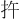
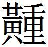

趙一
鮑本 趙：初分晉，得趙國。北有信都、真定、常山、中山，又得涿郡之高陽鄚州鄉。東有廣平、鉅鹿、清河、河間、渤海之東平、舒、中邑、文安、束州、成平、章武河以北。南至浮水、繁陽、內黃、斥丘。西有太原、定原、上黨。
知伯從韓魏兵以攻趙
知伯從韓、魏兵〔一〕 以攻趙，圍晉陽而水之，城下〔二〕 不沉者三板。郤疵〔三〕 謂知伯曰：「韓、魏之君必反矣。」知伯曰「何以知之？」郗疵曰：「以其人事知之。夫〔四〕 從韓、魏之兵〔五〕 而攻趙，趙亡，難必及韓、魏矣。今約勝趙〔六〕 而三分其地。今城不沒者三板，臼灶生蛙，人馬相食，城降有日，而韓、魏之君無憙〔七〕 志而有憂色，是非反如〔八〕 何也？」
〔一〕 鮑本 二國兵從之。
〔二〕 鮑本 「下」作「之」。補曰：疑衍，或是「之」字。
〔三〕 姚本 元和姓篡，郤，己姓，青陽氏之後，趙有郤疵。鮑本 晉人。補曰：郤，刺黎反，孫本作「郗」，說文 作「絺」。
〔四〕 鮑本 「夫」作「矣」。一本作「夫」，「夫」當屬下句。
〔五〕 鮑本 「兵」作「君」。
〔六〕 姚本 四本無「勝趙」二字。
〔七〕 鮑本 「憙」作「喜」。
〔八〕 鮑本 補曰：猶而。
明日，知伯以告韓、魏之君曰：「郤疵言君之且反也。」韓、魏之君曰：「夫勝趙而三分其地，城今且將拔矣。夫三〔一〕 家雖愚，〔二〕 不棄美利於前，背信盟之約，而為危難不可成之事，其勢可見也。是疵為趙計矣，使君疑二主之心〔三〕 ，而解〔四〕 於攻趙也。今君聽讒臣之言，而離二主之交，為君惜之。」趨而出。郤疵謂知伯曰：「君又何以疵言告韓、魏之君為？」知伯曰：「子安知之？」對曰：「韓、魏之君視疵端而趨疾〔五〕 。」
〔一〕 姚本 錢、劉作「二」。鮑本 「三」作「二」。
〔二〕 鮑本 補曰：「愚」下恐當有「必」字。札记 丕烈案：吳說未是。
〔三〕 鮑本 二主自稱曰「主」，亦非當時語。
〔四〕 鮑本 「解」，「懈」同。
〔五〕 鮑本 視端，畏之；趨疾，避之。恐疵要之與見知伯而辭屈也。
郤疵知其言之不聽，請使於齊，知伯遣之。韓、魏之君果反矣。〔一〕
〔一〕 鮑本 彪謂：智伯至是，眩於得而不顧其禍，殆天奪其魄者。至以謀人之言，質人以反，夫非狂昏癡瞢，孰肯自承其反哉？
知伯帥趙韓魏而伐范中行氏
知伯帥趙、韓、魏而伐范中行氏〔一〕 ，滅之。休數年，使人請地於韓。韓康子欲勿與，段規〔二〕 諫曰：「不可。夫知伯之為人也，好利而鷙〔三〕 復〔四〕 ，來請地不與，必加兵於韓矣。君其與之。與之〔五〕 彼狃〔六〕 ，又將請地於他國，他國不聽，必鄉之以兵；然則韓可以免於患難，而待事之變。」康子曰：「善。」使使者致萬家之邑一於知伯。知伯說，又使人請地於魏，魏宣〔七〕 子欲勿與。趙葭〔八〕 諫曰：「彼請地於韓，韓與之。請地於魏，魏弗與，則是魏內自強，而外怒知伯也。然則其錯兵於魏必矣！不如與之。」宣子曰：「諾。」因使人致萬家之邑一於知伯。知伯說，又使人之趙，請蔡〔九〕 、皋狼之地；趙襄子弗與。知伯因〔一〇〕 陰結韓、魏，將以伐趙。
〔一〕 鮑本 補曰：范氏，士會之後。荀林父將中行，後因以官為氏。
〔二〕 鮑本 韓人。晉舊姓，故魏亦有。補曰：姓譜 ，段，鄭共叔段之後。
〔三〕 鮑本 鷙，殺鳥也，喻其殘忍。
〔四〕 姚本 四本只作「復」，劉作「愎」。鮑本 補曰：韓子 作「鷙愎」。
〔五〕 鮑本 「與之」不重。札记 丕烈案：韓子 復有。
〔六〕 鮑本 狃，犬性驕也。補曰：狃，習也。
〔七〕 鮑本 「宣」作「桓」。補曰：韓子 、說苑 亦並作「宣」，恐「桓」字訛，下同。
〔八〕 鮑本 魏人，亦晉舊姓。
〔九〕 鮑本 「蔡」作「藺」。蔡非趙地，皋狼屬西河。補曰：恐名偶同。漢志 ，西河郡有皋狼縣，又有藺縣。或「藺」字訛。札记 丕烈案：韓子 作「蔡」。
〔一〇〕 鮑本 無「因」字。札记 丕烈案：韓子 有。
趙〔一〕 襄子召張孟談而告之曰：「夫知伯之為人，陽親而陰疏〔二〕 ，三使韓、魏，而寡人弗與焉，其移兵寡人必矣。今吾安居而可？」張孟談曰：「夫董閼安于，簡主〔三〕 之才臣也，世治晉陽，而尹澤〔四〕 循〔五〕 之，其餘政教猶存，君其定居晉陽。」君〔六〕 曰：「諾。」乃使延陵王〔七〕 將車騎先之晉陽，君因從之。至，行城郭，案〔八〕 府庫，視倉廩，召張孟談曰：「吾城郭之完，府庫足用，倉廩實矣，無矢奈何？」張孟談曰：「臣聞董子之治晉陽也，公宮之垣〔九〕 ，皆以狄蒿苫楚廧之〔一〇〕 ，其高至丈餘，君發而用之。」於是發而試之，其堅則箘簬〔一一〕 之勁不能過也。君曰：「足〔一二〕 矣，吾銅少若何？」張孟談曰：「臣聞董子之治晉陽也，公宮之室，皆以鍊銅為柱質〔一三〕 ，請發而用之，則有餘銅矣。」君曰：「善。」號令以定，備守以具。
〔一〕 姚本 曾、錢無「趙」字。
〔二〕 鮑本 他日陰疏，今則顯矣。
〔三〕 鮑本 「主」作「子」。補曰：一本作「主」。札记 丕烈案：韓子 作「主」。
〔四〕 鮑本 「尹」作「君」。君澤，趙臣，繼安于者。補曰：大事記 ，晉陽，漢太原郡所治，龍山在西北，晉水所出。一本「尹澤」。大事記 謂「澤」字誤，韓子 、國語 作「尹鐸」。札记 丕烈案：「澤」、「鐸」同字耳。
〔五〕 姚本 曾、錢皆作「修」。
〔六〕 鮑本 君，謂襄子。
〔七〕 鮑本 「王」作「君」。此襄子臣，不得稱王。「王」當作「生」。正曰：韓子 云，趙襄子召延陵生令將云云。浚儀王氏謂鮑失考。札记 今本「王」作「君」，乃誤涉鮑也。
〔八〕 鮑本 「案」，「按」同。行也。
〔九〕 鮑本 垣，牆也。
〔一〇〕 鮑本 「狄」作「荻」。荻，萑葦屬。爾雅 「蕭荻」注，即蒿。又蘩醜，秋為蒿。苫，蓋也。楚，荊也。以是為牆。「廧」，「牆」同。札记 今本「苫」作「楛」，「之」下有「有楛」二字。丕烈案：韓子 作「皆以荻蒿楛楚牆之，有楛高至于丈」。此「苫」字當作「苦」，即韓子 之「楛」字。韓子 「有楛」二字依此，策 文當衍。今本反依之添入，誤也。
〔一一〕 鮑本 補曰：箘，音窘。簬，即簵，見禹貢 。
〔一二〕 鮑本 「足」上有「矢」字。札记 丕烈案：韓子 作「吾箭已足矣」。
〔一三〕 鮑本 質，礎也。
三國之兵乘晉陽城，遂戰。三月不能拔，因舒軍而圍之，決晉水而灌之。圍晉陽三年，城中巢居而處，懸釜而炊，財食將盡，士卒病羸。襄子謂張孟談曰：「糧食匱，城〔一〕 力盡，士大夫病，吾不能守矣。欲以城下〔二〕 ，何如？」張孟談曰：「臣聞之，亡不能存，危不能安，則無為貴知士也。君釋此計，勿復言也。臣請見韓、魏之君。」襄子曰：「諾。」
〔一〕 鮑本 「城」作「財」。札记 丕烈案：韓子 作「財」。
〔二〕 鮑本 謂將降。
張孟談於是陰見韓、魏之君曰：「臣聞脣亡則齒寒，今知伯帥二國之君伐趙，趙將亡矣，亡則二君為之次矣。」二君曰：「我知其然。夫知伯為人也，麁中〔一〕 而少親，我謀未遂而知，則其禍必至，為之奈何？」張孟談曰：「謀出二君之口，入臣之耳，人莫之知也。」二君即與張孟談陰約三軍，與之期曰〔二〕 ，夜〔三〕 ，遣入晉陽。張孟談以報襄子，襄子再拜之。
〔一〕 鮑本 「麁」作「麤」。「麤」，「粗」同，疏也。正曰：相厲少仁愛。札记 丕烈案：韓子 作「麤」。
〔二〕 鮑本 無「曰」字，補「日」字。札记 丕烈案：韓子 有，作「日」。
〔三〕 鮑本 曰既夜。
張孟談因朝〔一〕 知伯而出，遇知過〔二〕 轅門之外〔三〕 。知過入見知伯曰：「二主殆將有變。」君〔四〕 曰：「何如？」對曰：「臣遇張孟談於轅門之外，其志矜，其行高。」知伯曰：「不然。吾與二主約謹矣，破趙三分其地，寡人所親之〔五〕 ，必不欺也。子釋之，勿出於口。」知過出見二主，入說知伯曰：「二主色動而意變，必背君，不如令殺之。」知伯曰：「兵箸〔六〕 晉陽三年矣，旦暮當拔之〔七〕 而饗其利，乃有他心？不可，子慎勿復言。」知過曰：「不殺則遂親之。」知伯曰：「親之奈何？」知過曰：「魏宣子之謀臣曰趙葭，康子之〔八〕 謀臣曰段規〔九〕 ，是皆能移其君之計。君其與二君約，破趙則封二子者各萬家之縣一，如是則二主之心可不變，而君得其所欲矣。」知伯曰：「破趙而三分其地，又封二子者各萬家之縣一，則吾所得者少，不可。」知過見君之不用也，言之不聽，出，更其姓為輔氏，遂去不見。
〔一〕 鮑本 兵交，使在其間，胡得朝之？
〔二〕 姚本 一云「知果」。鮑本 「過」，一作「果」，智伯之族。補曰：晉語，「智宣子將以瑤為後，知果曰：『不如宵也。』弗聽」。知果，別族，於太史為輔氏。通鑑 取此，與策 先後不同。
〔三〕 鮑本 以車為門，而轅外向。
〔四〕 鮑本 君，智伯。
〔五〕 鮑本 言親與二國約。
〔六〕 鮑本 箸，言附其城。
〔七〕 鮑本 無「之」字。札记 丕烈案：韓子 有。
〔八〕 鮑本 「宣」上有「桓」字，「康」上補「韓」字。補曰：恐缺「韓」字。札记 丕烈案：韓子 有。
〔九〕 鮑本 二謚皆非當時語。
張孟談聞之，入見襄子曰：「臣遇知過於轅門之外，其視有疑臣之心，入見知伯，出更其姓〔一〕 。今暮不擊，必後之矣。」襄子曰：「諾。」使張孟談見韓、魏之君曰〔二〕 ：「夜期殺守堤之吏，而決水灌知伯軍。」知伯軍〔三〕 救水而亂，韓、魏翼而擊之〔四〕 ，襄子將卒犯其前，大敗知伯軍而禽知伯。
〔一〕 鮑本 恐智伯以過之去之決，有感動矣。
〔二〕 鮑本 「曰」作「日」。札记 丕烈案：韓子 作「至於期日之夜」。
〔三〕 鮑本 原無「軍」字，補「軍」字。札记 丕烈案：韓子 有。
〔四〕 鮑本 左右夾擊。
知伯身死，國亡地分，為天下笑，此貪欲無厭也。夫不聽知過，亦所以亡也。知氏盡滅，唯輔氏存焉。〔一〕
〔一〕 鮑本 彪謂：段規之策，智伯、智過之察，孟談皆如在其目中，可謂明也已矣。此一時三晉、智氏皆有士，三晉之應之如響，智氏獨不用之而亡，則士豈非天下之重寶乎？雖然，水灌晉陽，城之不沈者三板，於此時，使智伯殺韓、魏之君，亦難聽矣。其次，欲其分封二子，是豈不可為與？智伯惟沒於利，故昏於智，故孟子 之說曰，「何必曰利」？
張孟談既固趙宗
張孟談〔一〕 既固趙宗，廣〔二〕 封疆，發五百〔三〕 ，乃稱簡之塗〔四〕 以告襄子曰：「昔者，前國地君之御〔五〕 有之曰：『五百之所以致天下者，約〔六〕 兩〔七〕 主勢能制臣，無令臣能制主。故貴為列侯者，不令在相位，自將軍以上，不為近大夫。』今臣之名顯而身尊，權重而眾服，臣願捐〔八〕 功名去權勢以離眾。」襄子恨然曰：「何哉？吾聞輔主者名顯，功大者身尊，任國者權重，信忠在己而眾服焉。此先聖之所以集國家，安社稷乎〔九〕 ！子何為然？」張孟談對曰：「君之所言，成功之美也。臣之所謂，持國之道也。臣觀成事，聞往古，天下之美同〔一〇〕 ，臣主之權均之〔一一〕 能美，未之有也。前事之不忘，後事之師。君若弗圖，則臣力不足。」愴然有決〔一二〕 色。襄子去之。臥三日，使人謂之曰：「晉陽之政，臣下不使者〔一三〕 何如〔一四〕 ？」對曰：「死僇〔一五〕 。」張孟談曰：「左司馬〔一六〕 見使於國家，安社稷，不避其死，以成其忠，君其行之〔一七〕 。」君曰：「子從事。」乃許之〔一八〕 。張孟談〔一九〕 便厚以便名〔二〇〕 ，納地釋事以去權尊，而耕於負親之丘〔二一〕 。故曰，賢人之行，明主之政也〔二二〕 。
〔一〕 鮑本 補曰：「談」，史 作「同」，太史公避父諱也。
〔二〕 鮑本 「廣」作「廟」。補曰：一本「廟」作「廣」，是。
〔三〕 鮑本 「百」作「霸」。下同。伯業不振，今復發之。補曰：即「伯」，古通。
〔四〕 鮑本 稱者，舉其說也。此士國地君之御。札记 丕烈案：此策 文多不可通，當闕。
〔五〕 鮑本 國地猶武安之類，御則之塗。
〔六〕 鮑本 約者，自斷之辭。
〔七〕 鮑本 衍「兩」字。補曰：恐字有誤。札记 今本無「兩」字，乃誤涉鮑也。
〔八〕 鮑本 「捐」作「損」。補曰：一本作「捐」。
〔九〕 姚本 劉改作「也」。
〔一〇〕 鮑本 有美而同，必相嫉。
〔一一〕 鮑本 補曰：外記 「之」作「而」。札记 丕烈案：此外記 改耳。
〔一二〕 鮑本 雖欲決去，而猶愴然，明不得已也。一說，決，猶別。
〔一三〕 鮑本 不為國用。
〔一四〕 札记 今本「何如」誤「如何」。
〔一五〕 鮑本 「僇」，「戮」同。
〔一六〕 鮑本 失其名。
〔一七〕 鮑本 行，猶用也，疑當作「任」。補曰：左司馬，恐孟談自謂之辭。行之者，許之，僇之，推□也。
〔一八〕 鮑本 使談自從其所欲之事，以其薦賢自代，故許其去。
〔一九〕 鮑本 此下著書者美之也。
〔二〇〕 鮑本 便，安。厚，重也。去權所以安其重，損名所以安其名。
〔二一〕 鮑本 趙地，缺。
〔二二〕 鮑本 此美襄子。
耕三年，韓、魏、齊、燕〔一〕 負親以謀趙〔二〕 ，襄子往見張孟談而告之曰：「昔者知氏之地，趙氏分則多十城，復來〔三〕 ，而今諸侯孰〔四〕 謀我，為之奈何？」張孟談曰：「君其負劍而御臣以之國〔五〕 ，舍臣於廟，授吏大夫〔六〕 ，臣試計之。」君曰：「諾。」張孟談乃行，其妻之楚〔七〕 ，長子之韓，次子之魏，少子之齊。四國疑而謀敗〔八〕 。〔九〕
〔一〕 鮑本 「燕」作「楚」。補曰：下文有楚無燕，必有一誤。
〔二〕 鮑本 言五國昔約親，今背之。正曰：上言「負親之丘」，不應此義頓異。恐「負親」字衍，或上有缺文。
〔三〕 鮑本 言分地多自與，韓、魏嘗以為言矣，今復來也。正曰：「復來」字恐舛誤在上。當云「而今諸侯復來」，句似順。
〔四〕 鮑本 衍「孰」字。補曰：孰為我謀。札记 今本無「孰」字，乃誤涉鮑也。
〔五〕 鮑本 君自為御。
〔六〕 鮑本 授談之吏以為大夫，示尊顯之也。
〔七〕 鮑本 使妻之楚。
〔八〕 鮑本 談，趙之謀臣，而其妻子分適四國，故四國更相疑，以為厚趙也。
〔九〕 鮑本 彪謂：孟談，有道之士也。國有危難，不顧萬死，出入行陣，以就其謀，功成事遂，則委而去之。已去而復出，以銷國家之難。非有道，孰能出處語默若是之裕哉？范蠡始終之際賢矣，方之孟談猶一間也。正曰：孟談可謂謀智之士，有道則未也。
晉畢陽之孫豫襄〔校一〕
〔校一〕 此篇姚本與上篇張孟談既固趙宗 連篇，鮑本分為兩篇。現據文義，從鮑本。
晉畢陽〔一〕 之孫豫讓，始事范中行氏而不說，去而就知伯，知伯寵之。及三晉分知氏，趙襄子最怨知伯，而將其頭以為飲器〔二〕 。豫讓遁逃山中，曰：「嗟乎！士為知己者死，女為悅己者容〔三〕 。吾其報知氏之讎矣。」乃變姓名，為刑人，入宮塗厠，欲以刺襄子。襄子如厠，心動，執問塗者，則豫讓也。刃其扞〔四〕 ，曰：「欲為知伯報讎！」左右欲殺之。趙襄子曰：「彼義士也，吾謹避之耳。且知伯已死，無後，而其臣至為報讎，此天下之賢人也。」卒釋之。豫讓又漆身為厲〔五〕 ，滅鬚去眉，自刑以變其容，為乞人而往〔六〕 乞，其妻不識，曰：「狀貌不似吾夫，其音何類吾夫之甚也。」又吞炭為啞，變其音。其友謂之曰：「子之道甚難而無功，謂子有志則然矣，謂子智則否。以子之才，而善事襄子，襄子必近幸子；子之得近而行所欲，此甚易而功必成。」豫讓乃笑而應之曰：「是為先知報後知，為故君賊新君，大亂君臣之義者無〔七〕 此矣。凡吾所謂為此者，以明君臣之義，非從易也。且夫委質而事人，而求弒之，是懷二心以事君也。吾所為難，亦將以愧天下後世人臣懷二心者。」
〔一〕 鮑本 畢萬之後。正曰：無明據。晉語，伯宗索士庇州犁，得畢陽。及欒弗忌之難，諸大夫害伯宗，畢陽實送州犁于荊。讓乃其孫，義烈有自來矣。
〔二〕 鮑本 補曰：史 ，漆其頭。說苑 ，異日智伯與襄子飲，而灌襄子之首，後敗智伯，漆其首為飲器。索隱 云，案大宛傳 ，匈奴以月氏王頭為飲器。裴氏引韋昭云「稗榼也」，晉灼曰「虎子也」，皆非。稗榼所以盛酒，非用飲者。皆以韓子 、呂氏春秋 并云「漆智伯頭以為飲器」故也。
〔三〕 鮑本 修其容色。補曰：司馬子長用此語，「死」作「用」。
〔四〕 姚本 曾本作「

」。鮑本 「扞」，「銲」同。集韻 ，矛鐏謂之銲。刃，施刃其端。〔五〕 鮑本 補曰：索隱 曰，癩，惡瘡。凡漆有毒，近之多患疥腫，若癩病然。故讓以漆塗身，令若癩。「厲」、「癩」，聲近假借。
〔六〕 鮑本 補曰：史 作「行」。札记 丕烈案：史 作「行乞於市」，與此策 文多不同也。
〔七〕 鮑本 補曰：「無」字下恐有缺字。
居頃之，襄子當出，豫讓伏所當〔一〕 過橋下。襄子至橋而馬驚。襄子曰：「此必豫讓也。」使人問之，果豫讓。於是趙襄子面數豫讓曰：「子不嘗事范中行氏乎？知伯滅范中行氏，而子不為報讎，反委質事知伯。知伯已死，子獨何為報讎之深也？」豫讓曰：「臣事范中行氏，范〔二〕 中行氏以眾人遇臣，臣故眾人報之；知伯以國士〔三〕 遇臣，臣故國士報之〔四〕 。」襄子乃喟然歎泣曰：「嗟乎，豫子！豫〔五〕 子〔六〕 之為知伯，名既成矣，寡人舍子，亦以〔七〕 足矣。子自為計，寡人不舍子。」使兵環之。豫讓曰：「臣聞明主不掩人之義，忠臣不愛死以成名。君前已〔八〕 寬舍臣，天下莫不稱君之賢。今日之事，臣故〔九〕 伏誅，然願請君之衣而擊之，雖死不恨。非所望也〔一〇〕 ，敢布腹心。」於是襄子義之，乃使使者〔一一〕 持衣與豫讓。豫讓拔劍三躍，呼天擊之〔一二〕 曰：「而可以報知伯矣〔一三〕 。」遂伏劍而死。死之日，趙國之士聞之，皆為涕泣。〔一四〕
〔一〕 鮑本 「所當」二字作「以」。補曰：一本「伏所當過」。札记 丕烈案：史記 作「所當」。
〔二〕 鮑本 原無「范」字，補「范」字。札记 丕烈案：史記 有。
〔三〕 鮑本 國士，名蓋一國者。
〔四〕 鮑本 為國士所為以報之。
〔五〕 姚本 劉去「豫」字。鮑本 無「豫」字。札记 丕烈案：史記 無。
〔六〕 鮑本 衍「子」字。札记 丕烈案：史記 有。
〔七〕 鮑本 「以」作「已」。札记 丕烈案：史記 作「已」。
〔八〕 札记 今本「已」誤「以」。
〔九〕 鮑本 補曰：「故」，「固」通。
〔一〇〕 鮑本 言有此心，望不及此。
〔一一〕 札记 今本「者」下誤衍「者」字。
〔一二〕 姚本 錢無「呼天」二字，劉作「呼天而擊之」。
〔一三〕 鮑本 而，自呼也。
〔一四〕 姚本續 云：司馬貞引戰國策 ，「衣盡血，襄子回車之輪，未周而亡」。此不言衣出血者，太史公恐涉怪妄，故略之耳。今本無此，乃後人所刪。說苑 ，「襄子自置車庫中，水漿不入口三日，以禮豫讓」。鮑本 刺客傳 有。彪謂：襄子、豫子皆千載人也。豫子能報舊君，能厲天下後世之為臣。使他人為之，必一失於此矣。或以其無成事為空自苦。夫壯士能行其志而已，成不成則有命焉，吾何以必之哉？智伯有如此臣，以國士遇之，而不免於亡，殆與郭君善善為輩者歟！補曰：讓，義士也，史遷列之刺客 ，而蘇轍氏古史 亦謂之非賢，失之矣。朱子綱目 附見於三晉始命之下，則以其事在前，不得特書以表之爾。大事記·解題 略見，而記 不書，未知呂子之旨。按索隱 引策 云，「衣盡出血，襄子回車，車輪未周而亡」。今無此文，或以其怪而刪之歟。
魏文侯借道於趙攻中山
魏文侯借道於趙攻中山〔一〕 。趙侯將不許。趙利曰：「過矣。魏攻中山而不能取，則魏必罷〔二〕 ，罷則趙重。魏拔中山，必不能越趙而有中山矣。是用兵者，魏也；而得地者，趙也。君不如許之，許之大勸，彼將知矣〔三〕 利之也，必輟。君不如借之道，而示之不得已。」
〔一〕 鮑本 魏十七年，此元年。
〔二〕 鮑本 音疲。
〔三〕 姚本 劉無「矣」字。鮑本 「矣」作「趙」。補曰：此本「趙利」又舉人姓名，皆難解，疑有舛誤。札记 丕烈案：韓子 有此事，云「彼將知君利之也」。「趙」字當是，吳氏失考也。
秦韓圍梁燕趙救之〔校一〕
〔校一〕 此篇鮑本在魏策 。
秦、韓圍梁〔一〕 ，燕、趙救之。謂山陽君〔二〕 曰：「秦戰而勝三國，秦必過周、韓而有梁。三國而勝秦，三國之力，雖不足以攻秦，足以拔鄭〔三〕 。計〔四〕 者不如構三國攻秦。」〔五〕
〔一〕 鮑本 衍「韓」字。秦獻公二十三年戰少梁，此九年。正曰：據鮑說以為魏敗韓、趙于澮之年。少梁，即獲公叔痤之戰，不聞燕、趙之救也，時方敗趙，趙豈得救之？此皆無據之言。且策 云圍梁，不云少梁，圍梁必惠王徙都大梁后，不可考矣。徙都大梁在惠王三十一年。
〔二〕 鮑本 楚宣策 言此人，正同時也。
〔三〕 鮑本 新鄭。鄭近梁，故云。正曰：韓哀侯二年已滅鄭，此鄭即謂韓。
〔四〕 鮑本 為梁計。
〔五〕 鮑本 原在趙策 。正曰：證據不明，且當從舊。
腹擊為室而鉅
腹擊〔一〕 為室而鉅，荊敢〔二〕 言之主。謂腹子曰：「何故為室之鉅也？」腹擊曰：「臣羈旅也，爵高而祿輕，宮室小而帑不眾。〔三〕 主雖信臣，百姓皆曰：『國有大事，擊必不為用。』今擊之鉅宮〔四〕 ，將以取信於百姓也。」主君曰：「善。」〔五〕
〔一〕 鮑本 他國人，仕趙。
〔二〕 鮑本 楚人，仕趙。正曰：無據。荊軻，衛人，荊豈專為楚姓？
〔三〕 鮑本 帑，金幣所藏。正曰：「帑」，「孥」通。詩注，子孫也。金幣與「眾」義不協。
〔四〕 姚本 曾改作「室」。
〔五〕 鮑本 此曰「主」、曰「主君」，主父故在也。然則上章「王」當作「主」。正曰：齊侯使高張唁公，稱「主君」。子家子曰「齊卑君矣。主君，大夫之稱也」。秦策 ，甘茂引樂羊曰「主君之功」。魏策 ，魯侯擇言稱「主君之尊」云云，蓋三晉以大夫為諸侯，故猶仍之。趙稱襄主、簡主是也。策 後亦多稱「主」，武靈自稱「主父」，與稱「主」者不同。此策 時不可考。鮑妄置於惠文時，故為之說。又齊、韓、魏攻秦，在惠文元年。滅中山在三年。大事記 從世家 ，以年表 為誤。愚考中山亡，實在前。見齊策 。主父死在四年，上章五年，自有所指，初不與此相涉，安得以此改彼文也？補曰：鉅宮以信百姓，誑主甚矣。
蘇秦說李兌
蘇秦〔一〕 說李兌曰：「雒陽〔二〕 乘軒車〔三〕 蘇秦〔四〕 ，家貧親老，無罷車駑馬〔五〕 ，桑輪蓬篋羸〔六〕 幐，負書擔橐〔七〕 ，觸塵埃，蒙霜露，越漳、河〔八〕 ，足重繭〔九〕 ，日百而舍，〔一〇〕 造外闕，願見於前，口道天下之事。」李兌曰：「先生以鬼之言見我則可，若以人之〔一一〕 事，兌盡知之矣。」蘇秦對曰：「臣固以鬼之言見君，非以人之言也。」李兌見之。蘇秦曰：「今日臣之來也暮，後郭門〔一二〕 ，藉〔一三〕 席無所得，寄宿人田中，傍有大叢〔一四〕 。夜半，土梗〔一五〕 與木梗鬥曰：『汝不如我，我者〔一六〕 乃土也。使我逢疾風淋〔一七〕 雨，壞沮〔一八〕 ，乃復歸土。今汝非木之根，則木之枝耳。汝逢疾風淋雨，漂入漳、河，東流至海，汜濫無所止。』臣竊以為土梗勝也〔一九〕 。今君殺主父而族之〔二〇〕 ，君之立於天下，危於累卵。君聽臣計則生，不聽臣計則死。」李兌曰：「先生就舍，明日復來見兌也。」蘇秦出。
〔一〕 鮑本 「秦」作「子」。補曰：字誤，下同。札记 丕烈案：吳氏補曰，字誤，下同。非也。又曰，太史公所謂異時事有類之者皆附之，蘇秦其此類邪？是也。策 文本如此。
〔二〕 姚本 元和姓纂 ，洛陽，蘇秦之後，今無聞。
〔三〕 鮑本 補曰：一本「乘軒里」。既曰「乘軒車」，而下又云：「無罷車駑馬」，則此作「里」字為是。河南志，洛陽城東御道北孝義里西北隅，有蘇秦冢。札记 丕烈案：史記 正義 引策 云，「蘇秦，洛陽軒里之人也」。則張守節所見本是「里」字，可證一本之善也。
〔四〕 鮑本 「秦」作「某」。札记 丕烈案：鮑改誤甚，策 文無作「某」之例。
〔五〕 鮑本 「罷」，「疲」同。猶敝也。車勞敗敝。
〔六〕 鮑本 「羸」作「贏」。正曰：說見秦策 蘇秦章。
〔七〕 鮑本 「橐」作「囊」。
〔八〕 鮑本 「漳河」作「河漳」。補曰：濁漳合清漳，東北至阜城，入北河。漢初，漳猶入河，其後河徙日東，而漳自入海。策 中凡言「漳河」、「河漳」者，以漳入河相連也。此下又有「漳河」字。
〔九〕 鮑本 繭，足胝也。
〔一〇〕 鮑本 日行百里乃就舍。
〔一一〕 鮑本 無「之」字。
〔一二〕 鮑本 郭門後至，不及其開時。
〔一三〕 鮑本 藉，謂借。
〔一四〕 鮑本 補曰：叢，見秦策 。
〔一五〕 鮑本 土亦言梗，因木為類也。補曰：說見齊策 。
〔一六〕 姚本 曾去「者」字。鮑本 補曰：愚謂有「者」字語勝。
〔一七〕 鮑本 淋，言其大能沃物。
〔一八〕 鮑本 「沮」作「阻」。札记 丕烈案：「阻」字誤。
〔一九〕 鮑本 此喻不切於兌之事，蓋以鬼事發其言耳。
〔二〇〕 鮑本 殺在四年，言族，則其宗多死者。
李兌舍人謂李兌曰：「臣竊觀君與蘇公談也，其辯過君，其博過君，君能聽蘇公之計乎？」李兌曰：「不能。」舍人曰：「君即不能，願君堅塞兩耳，無聽其談也。」明日復見，終日談而去。舍人出送蘇君，蘇秦謂舍人曰：「昨日我談粗而君動，今日精而君不動，何也？」舍人曰：「先生之計大而規高，吾君不能用也。乃我請君塞〔一〕 兩耳，無聽談者。雖然，先生明日復來，吾請資先生厚〔二〕 用。」明日來，抵掌而談。李兌送蘇秦明月之珠〔三〕 ，和氏之璧〔四〕 ，黑貂之裘，黃金百鎰〔五〕 。蘇秦得以為用，西入於秦。〔六〕
〔一〕 鮑本 「塞」上有「堅」字。
〔二〕 鮑本 言使兌厚而用之。正曰：用，財費也。
〔三〕 鮑本 覽冥訓注，隋侯珠云。札记 今本「月」誤「日」。
〔四〕 鮑本 卞和所獻楚文王者。補曰：趙得楚和氏璧，秦昭王欲以十五城易之。李兌所送必非。
〔五〕 鮑本 「鎰」作「溢」，又改作「鎰」。
〔六〕 鮑本 補曰：蘇秦之死在慎靚王四年，去主父見殺時遠甚。此策 言殺主父事，非秦明矣。其代、厲與？首尾亦與秦策·蘇秦 章類，抑本秦言事，而勦入後事歟？土梗、木梗之喻，與齊策 止田文說同。彼亦秦死後事，而指為秦皆不合。太史公所謂異時事有類之者皆附之。蘇秦其此類耶？
趙收天下且以伐齊
趙收天下，且以伐齊。蘇秦〔一〕 為〔二〕 齊上書說趙王曰：「臣聞古之賢君，德行非施於海內也，教順慈愛，非布於萬民也，祭祀時享，非當於鬼神也。甘露降，風雨時至〔三〕 ，農夫登〔四〕 ，年穀豐盈，眾人喜之〔五〕 ，而賢主惡〔六〕 之。今足下功力〔七〕 ，非數痛加於秦國，而怨毒積惡，非曾深凌於韓也〔八〕 。臣竊外聞大臣及下吏之議，皆言主前專據〔九〕 ，以秦為愛趙而憎韓。臣竊以事觀之，秦豈得愛趙而憎韓哉？欲亡韓吞兩周之地，故以韓為餌〔一〇〕 ，先出聲於天下，欲鄰國聞而觀之也〔一一〕 。恐其事不成，故出兵以佯示〔一二〕 趙、魏。恐天下之驚覺，故微韓以貳之〔一三〕 。恐天下疑己，故出質以為信。聲德於與國，而實伐空韓〔一四〕 。臣竊觀其圖之也，議〔一五〕 秦以謀計，必出於是。
〔一〕 鮑本 「秦」作「厲」。補曰：史 作「厲」。
〔二〕 鮑本 補曰：去聲。
〔三〕 鮑本 無「至」字。札记 丕烈案：史記 作「時雨至」。
〔四〕 鮑本 穀熟曰登。
〔五〕 鮑本 「喜」作「善」。補曰：一本「喜之」。札记 丕烈案：史記 作「善」。
〔六〕 鮑本 惡，心不安也。以其無以致之故。
〔七〕 鮑本 謂戰伐。
〔八〕 姚本 曾本，「非素深于韓、齊也」。鮑本 補曰：「曾」恐即「增」。
〔九〕 鮑本 言行之不疑。
〔一〇〕 鮑本 趙時惡韓，故秦以亡韓悅趙，趙遂以為愛己也。補曰：秦兩「憎韓」及「以韓為餌」之「韓」，史並作「齊」，說見後。且亡韓吞兩周，文義明，作「齊」則不順。
〔一一〕 鮑本 觀其愛趙。
〔一二〕 鮑本 虛以伐韓示之。
〔一三〕 鮑本 「微」下補「伐」字。補曰：「微」下有缺文，史 作「徵兵於韓以威之」。貳，猶疑。札记 今本「微」下有「伐」字，乃誤涉鮑也。
〔一四〕 鮑本 如上文，則伐韓非秦所急也。此言實伐者，韓之在秦掌握中物耳，故不急於伐。恐趙不以為德，故終伐之。其伐之，亦欲以吞周而非愛趙也。正曰：實欲伐空虛之韓。
〔一五〕 鮑本 議，猶意。正曰：一本「議以為秦計謀」。
「且夫說士之計，皆曰韓亡三川，魏滅晉國〔一〕 ，恃〔二〕 韓未窮，而禍及於趙〔三〕 。且物固有勢異而患同者，又有勢同而患異者。昔者，楚人久伐而中山亡〔四〕 。今燕盡韓之河南〔五〕 ，距沙丘，而至鉅鹿〔六〕 之界三百里〔七〕 ；距於扞關，至於榆中千五百里〔八〕 。秦盡韓、魏之上黨，則地與國都〔九〕 邦屬而壤挈者〔一〇〕 七百里。秦以三軍強弩坐羊唐〔一一〕 之上，即地去邯鄲二十里。且秦以三軍攻王之上黨而危其北，則句注之西〔一二〕 ，非王之有也。今魯〔一三〕 句注禁常山而守〔一四〕 ，三百里通於燕之唐、曲吾〔一五〕 ，此代馬胡駒〔一六〕 不東，而崑山之玉〔一七〕 不出也。此三寶者，又非王之有也。今從於彊秦國〔一八〕 之伐齊，臣恐其禍出於是矣。昔者〔一九〕 ，五國〔二〇〕 之王，嘗合橫而謀伐趙，參分趙國壤地，著之盤盂〔二一〕 ，屬之讎柞〔二二〕 。五國之兵有日矣，韓〔二三〕 乃西師以禁〔二四〕 秦國，使秦發令素服而聽〔二五〕 ，反溫、枳〔二六〕 、高平〔二七〕 於魏，反三公、什清〔二八〕 於趙，以王之明知也。夫韓事趙宜正為上交〔二九〕 ；今乃以抵〔三〇〕 罪取伐，臣恐其後事王者之〔三一〕 不敢自必也。今王收〔三二〕 天下，必以王為得〔三三〕 。韓危〔三四〕 社稷以事王，天下必重王。然則韓〔三五〕 義王以天下就之〔三六〕 ，下至韓慕王以天下收之〔三七〕 ，是一世之命，制於王已。臣願大王深與左右群臣卒計而重謀，先事成慮而熟圖之也。」〔三八〕
〔一〕 鮑本 晉國，謂安邑。
〔二〕 鮑本 「恃」作「是」。補曰：恃，非所恃也。札记 今本「恃」作「是」，乃誤涉鮑也。丕烈案：史記 作「市朝未變，而禍已及矣」，與策 文不同。
〔三〕 鮑本 三晉，脣齒之國，故韓亡則魏滅，魏滅而禍及於趙，不待韓滅盡也。
〔四〕 鮑本 此言楚受秦伐，趙無秦患，故破中山滅之。故秦昭八年，再敗楚，遂言趙破中山。正曰：大事記 ，中山恃魏，楚、魏久連兵，中山失助而亡。今詳此言亦失考。年表 ，武靈王二十五年攻中山，而秦、韓、魏、齊擊楚，敗唐昧，亦此時也。說見燕、魏等策 。
〔五〕 鮑本 盡，言得其地。補曰：「盡韓之河」，史 作「燕盡齊之北地」。
〔六〕 鮑本 鉅鹿，冀州郡。
〔七〕 鮑本 自此皆言近趙。
〔八〕 鮑本 衍「千」字。榆中屬金城。補曰：「距於」云云，史 作「秦之上郡，近扞關，至於榆中，千五百里」。榆中、上郡見前。自上郡至榆中，則千五百里為是。楚有扞關，說見前策。大事記 云，扞者，扞敵之扞，非關名也。此趙扞敵之關，非獨楚有之。趙之扞關，陸地之關；楚之扞關，水道之關也。
〔九〕 鮑本 國，謂趙。
〔一〇〕 鮑本 言為秦所取。挈，言取之易。
〔一一〕 鮑本 「唐」作「腸」。札记 鮑改「唐」為「腸」。丕烈案：因史記 有羊腸之西而改耳。此多不同，未是也。
〔一二〕 鮑本 屬鴈門。補曰：括地志 云，句注山在鴈門縣西北。
〔一三〕 鮑本 「魯」作「踰」。補曰：字義未詳。札记 今本「魯」作「踰」，乃誤涉鮑也。丕烈案：史記 作「踰句注，斬常山而守之」。
〔一四〕 鮑本 守，猶閉。
〔一五〕 鮑本 「吾」作「遇」。正曰：當作「曲逆」。遇，音顒。史 注，中牟、曲遇、聚，鄭州縣，非此所指。按齊策 權之難章云，燕戰勝兵罷，趙可以取唐、曲逆。唐，即唐縣；曲逆，蒲陰縣。並屬中山。此「曲」下必「逆」字也，一本止作「唐曲」，亦缺誤。札记 今本「吾」作「遇」，乃誤涉鮑也。丕烈案：「吾」、「逆」聲之轉也，當存舊。史記 無「之唐曲吾」四字，文不同。
〔一六〕 鮑本 補曰：「胡駒」，史 作「胡犬」。郭璞云，胡地野犬，似狐而小也。
〔一七〕 鮑本 後志 ，金城臨羌有崑山。正曰：禹貢 ，雍州貢球琳、琅玕。爾雅 ，崑崙虛之璆琳、琅玕。李斯傳，崑山之玉。正義 云，崑岡在于闐國東北，出玉。按，武帝以于闐山出玉，故號玉所出曰崑崙。
〔一八〕 鮑本 「國」作「與」。札记 今本「國」作「與」，乃誤涉鮑也。丕烈案：史記 作「王久伐齊，從彊秦攻韓」。
〔一九〕 鮑本 無「昔者」二字。
〔二〇〕 鮑本 齊、楚、魏、韓、燕。
〔二一〕 鮑本 「參」作「三」。盤盂，取太公為武王作盤盂之銘 。補曰：言其日見而不忘。
〔二二〕 鮑本 「讎柞」，「酬酢」同。言其相屬伐趙於酬酢之間。
〔二三〕 鮑本 「韓」作「齊」。下并同。正曰：專據史 文輒改，大不然也。
〔二四〕 鮑本 禁，閉拒之。
〔二五〕 鮑本 今令其國素服者，兵敗以喪禮自居也。史 不書。
〔二六〕 姚本 一作「根柔」。鮑本 「枳」作「軹」。並屬河內。
〔二七〕 鮑本 高平，屬臨淮，安定亦有。正曰：括地志 云，高平故城，在懷州河陽縣西。言臨淮者，繆。安定，秦地，亦非。溫、枳皆河內，故當以懷州者為正。
〔二八〕 姚本續 云：史記 改「三公、什清」作「巠分、先俞」。鮑本 「公」字疑誤。安定有三水，朔方有三封，勃海有三戶，皆近趙。張儀塞什谷之口，當屯留之道，則什近屯留。後志 中牟注有清口，皆趙地也。正曰：「三公」二字有誤。史 云，反高平、根柔於魏，反巠分、先俞於趙。根柔未詳，文已明。括地志 云，句注山一名正陘山。爾雅 云，陵西踰、鄢門。疑此巠分乃巠山，先俞即西俞也。札记 丕烈案：徐廣注云，一作「王公」，即出於此。當各依本文。吳氏專以張守節說為據，未是也。
〔二九〕 鮑本 「韓」作「齊」，無「正」字。以其有志為趙閉秦。札记 今本「韓」上有「齊」字，乃誤涉鮑也。鮑改「韓」為「齊」。今本兩存，尤誤之甚者也。今本無「正」字，鮑本無。丕烈案：史記 無。
〔三〇〕 鮑本 「抵」作「邸」。「邸」，「抵」同，坐也。正曰：姚本 作「抵」，當也。札记 丕烈案：史記 作「抵」。
〔三一〕 鮑本 無「者之」二字。補曰：一本「事王者之」云云。札记 丕烈案：史記 有。
〔三二〕 鮑本 「收」下補「齊」字。札记 丕烈案：史記 作「今王毋與天下攻齊，天下必以王為義」。
〔三三〕 鮑本 「得」下「韓」作「齊」。
〔三四〕 姚本 「危」，曾作「抱」。鮑本 「危」上補「齊」字。札记 鮑改「韓」為「齊」，讀上屬。丕烈案：鮑讀誤也。史記 作「齊抱社稷以厚事王」。史記 「齊」，即此文「韓」，不得上屬。
〔三五〕 鮑本 「韓」作「齊」。
〔三六〕 鮑本 趙得天下之交而屈就齊，故齊以為義。
〔三七〕 鮑本 「韓」作「齊」。就之，上也，故收言下。正曰：就者，屈就之；收者，收結之。札记 鮑改「韓」為「齊」。丕烈案：吳氏有正，見上。史記 作「王以天下善秦，秦暴，王以天下禁之」。此策 文有誤字。
〔三八〕 姚本 此段與史記 文多不同，蓋訛謬，當用史記 全篇觀之。鮑本 趙惠文十六年有。正曰：史·趙世家 ，惠文十五年，燕昭王與趙、韓、魏、秦共擊齊，齊敗走，燕獨深入，取臨淄。十六年，秦復與趙數擊齊，齊人患之，蘇厲為齊遺趙王書云云，於是趙乃輟，謝秦不擊齊。大事記 ，是時齊地皆入燕，獨莒、即墨僅存。蘇厲之書皆不及之，恐非此時事。按策 多為韓言，乃趙將擊韓，而厲為韓止之者，其間事實，皆明為韓，而首云伐齊、為齊殊不合，決有誤。而史一切以「韓」為「齊」，抑馬遷之所改歟？然趙伐韓事，亦不知在何時，其文及地名亦多舛異不同，強為之說。鮑專據史 文輒改，大不然也。札记 丕烈案：吳說是也。策 文本皆作「韓」，或以史記 「齊」字亂之。
齊攻宋奉陽君不欲
齊攻宋，奉陽君不欲。客請奉陽君曰：「君之春秋 高矣，而封地不定，不可不熟圖也。秦之貪，韓、魏危，衛〔一〕 、楚正〔二〕 ，中山之地薄，宋罪重，齊怒深，殘伐亂宋，定身封，德強齊，此百代之一時也。」〔三〕
〔一〕 鮑本 「衛」作「燕」。正曰：上章作「燕」。札记 丕烈案：鮑依後公孫衍說文 也。
〔二〕 鮑本 「正」作「僻」。蓋「僻」、「匹」聲近，「匹」又訛作「正」字。補曰：宜註原文下。札记 丕烈案：鮑依後公孫衍說文 也。
〔三〕 鮑本 正曰：趙策 說奉陽君取陰之辭，自「宋罪重」以下至「百世之一時」已，凡兩見，而秦策 亦有之，以為謂穰侯。趙策 又曰，「魏冉必妒君之有陰」。按陰即陶，宋地，冉所封也。秦記 ，昭王十二年，樓緩免，穰侯魏冉為相；十六年，冉免，封公子市宛，公子悝鄧，魏冉陶，為諸侯。冉傳 云，免樓緩而魏冉相，冉謝病免，以燭壽為相；燭免，復相冉，乃封於穰，後益封陶，號曰穰侯。大事記 先書穰侯魏冉為相，從本；後書復以魏冉為丞相，封於穰與陶，謂之穰侯，又封公子市為宛侯，公子悝為鄧侯，從傳 。又謂三子之封，皆取於鄰國。秦去年取宛，今年取鄧，穰、陶雖不載何年得之，蓋亦近歲。按赧王十四年，秦付韓取穰，大事記 已書之矣。獨以陶為近歲所取，則眩於史文，未考其實。且據秦紀 ，則冉始相已封穰，後相封陶。於傳 則復相時封穰，後益以陶，已有不合。大事記 從之，亦偶未察，獨見於策者可考。李兌約五國伐秦，後欲取陰定封，說穰侯者亦勸之。策 文容有復混，而其事實並一時。是時齊欲攻宋，秦禁之，齊欲與趙，故說者勸李兌，上距冉復相秦五歲爾。使冉已封陶，兌安得欲之，而言者亦安得云「冉妒君之有陰」？因此言而知冉之未封陶而欲得之也。其後，齊滅宋兩年而為五國所破，趙既不取陶，而齊亦卒不能有。穰侯之取陶在此時歟？或謂魏策 謂穰侯云，「君攻楚取宛、穰，以廣陶封」，以封陶在前。竊謂秦之取穰、冉之封穰，固無疑矣。獨取陶定封，歲月不載。而史所謂後益封陶，號曰穰侯者，辭亦不明。意者陶之封大而入厚，冉國於陶，如取剛壽之類，皆云廣陶封，故魏策 之言如此。而宛亦非冉封，不足據信。使冉封陶，當曰陶侯，而稱穰侯，知始封穰必非誤也。
秦王謂公子他
秦王〔一〕 謂公子他曰：「昔歲殽下之事〔二〕 ，韓為中軍，以與諸侯攻秦。韓與秦接境壤界，其地不能千里，展轉〔三〕 不可約。日者秦、楚戰於藍田〔四〕 ，韓出銳師以佐秦，秦戰不利，因轉與楚，不固信盟，唯便是從。韓之在我，心腹之疾。吾將伐之，何如？」公子他曰：「王出兵韓〔五〕 ，韓必懼，懼則可以不戰而深取割。」王曰：「善。」乃起兵，一軍臨熒陽〔六〕 ，一軍臨太行。
〔一〕 鮑本 昭。
〔二〕 鮑本 即秦惠七年，五國攻函谷事。函、殽地近，故云。補曰：按趙世家 ，孝成二年，受韓上黨。長平之敗，在七年。秦惠七年，五國攻秦，至孝成二年，凡五十四年。秦惠十三年，敗楚藍田，距此四十九年。又韓襄王十四年，與齊、魏共擊秦於函谷，河渭絕一日，距孝成二年為三十五年，稍近。然遠引前事者，祗欲言韓之不可不伐耳。年表 ，破長平在孝成六年，與世家異。
〔三〕 鮑本 展轉，猶反覆。
〔四〕 鮑本 秦惠文後十三年。
〔五〕 鮑本 軍於其地。
〔六〕 鮑本 「熒」作「滎」。
韓恐，使陽城君入謝於秦〔一〕 ，請效上黨之地以為和。令韓陽告上黨之守靳

〔二〕 曰：「秦起二軍以臨韓，韓不能有〔三〕 。今王〔四〕 令韓興兵〔五〕 以上黨入和於秦，使陽言之太守〔六〕 ，太守其效之。」靳 曰：「人有言：挈瓶之知〔七〕 ，不失守器〔八〕 。王則有令，而臣太守〔九〕 ，雖王與子，亦其猜焉〔一〇〕 。臣請悉發守以應秦〔一一〕 ，若不能卒，則死之〔一二〕 。」韓陽趨以報王，王曰：「吾始已諾於應侯矣，今不與，是欺之也。」乃使馮亭代靳 。〔一〕 鮑本 「恐」上無「韓」字，補「韓」字。疑當作「成陽」，秦昭十七入朝者也。札记 丕烈案：鮑以為秦本紀 昭十七年，城陽君入朝者。今考集解 、索隱 無說，正義 亦不以為韓。鮑所說，殊無據，其繆多此類。
〔二〕 鮑本 「 」作「黈」。 ，字書無此字，下同。札记 今本「 」作「黈」，乃誤涉鮑也。丕烈案：此字有誤，但所改未是。
〔三〕 鮑本 「有」作「支」。札记 今本「有」作「支」。
〔四〕 鮑本 桓惠。
〔五〕 鮑本 恐守不效地故。
〔六〕 鮑本 補曰：索隱 云，漢景時始稱太守，「太」者衍字。愚按，史文止一稱太守，故索隱 云然。此策 凡五言之，決非衍，當時已有此稱矣。
〔七〕 鮑本 挈瓶之人之智。
〔八〕 鮑本 所守之器，謂瓶。
〔九〕 札记 今本「太」誤「失」。丕烈案：此吳所數之一，不得改去。
〔一〇〕 鮑本 「亦其」作「其亦」。嫌其不能守。
〔一一〕 鮑本 發兵。正曰：悉發守兵。
〔一二〕 鮑本 言戰敗不終事。
馮亭守三十日，陰使人請趙王曰：「韓不能守上黨，且以與秦，其民皆不欲為秦，而願為趙。今有城市之邑七十〔一〕 ，願拜內之於王，唯王才〔二〕 之。」趙王喜，召平原君〔三〕 而告之曰：「韓不能守上黨，且以與秦，其吏民不欲為秦，而皆願為趙。今〔四〕 馮亭令使者以與寡人，何如？」趙豹對曰：「臣聞聖人甚禍無故之利〔五〕 。」王曰：「人懷吾義，何謂無故乎？」對曰：「秦蠶食韓氏之地，中絕不令相通，故自以為坐受上黨也。且夫韓之所以內趙者，欲嫁其禍也。秦被其勞，而趙受其利，雖強大不能得之於小弱，而小弱顧能得之強大乎？今王取之，可謂有故乎？且秦以牛田〔六〕 ，水通糧，其死士皆列之於上地〔七〕 ，令嚴政行，不可與戰。王自圖之！」王大怒曰：「夫用百萬之眾，攻戰〔八〕 踰年歷歲，未見一城也。今不用兵而得城七十，何故不為？」趙豹出。
〔一〕 鮑本 補曰：史 作「十七」，下同。
〔二〕 鮑本 「才」，「財」、「裁」同。
〔三〕 鮑本 「平原君」作「平陽君」。史 作「平陽君」，趙豹是也。若果平原，下文不應復云召趙勝。補曰：「原」當作「陽」。
〔四〕 札记 今本「今」誤「令」。
〔五〕 鮑本 無「臣聞」二字。無故得利，聖人以為禍。札记 丕烈案：史記 無。
〔六〕 姚本 錢、劉作「甲」。鮑本 牛田，秦地，缺，因其水為漕。正曰：牛耕積穀，水漕通糧。秦從渭水漕運入河洛。或以為漢世始用牛耕。竊以為古用木耜，未有金耜，用人耕未用牛耕。耦耕者，二人並耕，或一人一牛亦可。漢始專用牛耕也。字書，「犁」從牛。冉耕字伯牛，司馬牛名犁，不可謂牛耕非古也。
〔七〕 鮑本 韓之上流。正曰：地之上者。
〔八〕 姚本 三本同作「齊」。
王召趙勝、趙禹而告之曰：「韓不能守上黨，今其守以與寡人，有城市之邑七十。」二人對曰：「用兵踰年，未見一城，今坐而得城〔一〕 ，此大利也。」乃使趙勝往受地。
〔一〕 鮑本 「城」下補「七十」二字。補曰：史此有「七十」二字。
趙勝至曰：「敝邑之王，使使者臣勝，太〔一〕 守有詔〔二〕 ，使臣勝謂曰：『請以三萬戶之都封太守，千戶封縣令〔三〕 ，諸吏皆益爵三級，民能相集者，賜家六金。』」馮亭垂涕而勉〔四〕 曰：「是吾處三不義也：為主守地而不能死，而以與人，不義一也；主內之秦，不順主命，不義二也；賣主之地而食〔五〕 之，不義三也。」辭封而入韓〔六〕 ，謂韓王曰：「趙聞韓不能守上黨，今發兵已取之矣。」
〔一〕 鮑本 「太」上補「告」字。札记 今本「太」上有「告」字，乃誤涉鮑也，鮑補「告」字。丕烈案：史記 無此句。策 文本如此，不誤，述馮亭所云也。下文「使臣勝謂曰」，方是告馮亭。鮑補誤甚。
〔二〕 鮑本 詔，告也，謂太守有告。有詔，秦人語耳。
〔三〕 鮑本 補曰：縣令，說見楚策 。
〔四〕 鮑本 「勉」作「免」。免，辭也。補曰：此書「勉」、「免」通。札记 丕烈案：此以「勉」為「俛」字也，吳說未是。
〔五〕 鮑本 食，食封戶也。
〔六〕 鮑本 補曰：漢書 ，趙封馮亭為華陽君，與趙將括距秦，戰死長平，與此異。
韓告秦曰：「趙起兵取上黨。」秦王怒，令公孫起、王齮〔一〕 以兵遇趙於長平。〔二〕
〔一〕 鮑本 補曰：公孫起即白起。史 王齕非齮，秦將有桓齮，此恐訛舛。札记 丕烈案：吳說非也。白起傳 曰，「乃陰使武安君白起為上將軍，而王齕為尉裨將」。秦始皇紀 「王齮、麃公」等，徐廣注，一作「齕」。索隱 曰，「王齮即王齕。昭王二十九年，代大夫陵伐趙者」。六國表 ，「秦莊襄王三年，王齕擊上黨」。徐廣亦注，一作「齕」。是王齮即王齕，其證甚明，與桓齮迥不相涉。吳偶失考也。王震澤本索隱 ，「齕」作「騎」，單本並刪去「王齕」二字，皆誤。
〔二〕 鮑本 趙記 四年有，馮亭下。彪謂：平陽嫁禍之言，豈不易曉，而孝成怒之，昏於利之。勝、禹入而順旨，以濟其欲，不幾於一言而喪邦歟？故為邦者以遠佞人為急。正曰：勝、禹淺謀，非佞也。
蘇秦為趙王使於秦
蘇秦為趙王使於秦〔一〕 ，反，三日不得見。謂趙王曰：「秦乃者過柱山〔二〕 ，有兩木焉。一蓋呼侶〔三〕 ，一蓋哭。問其〔四〕 故，對曰：『吾已大矣，年已長矣，吾苦夫匠人，且以繩墨案規矩刻鏤我。一蓋曰：『此非吾所苦也，是故吾事也〔五〕 。吾所苦夫鐵鉆〔六〕 然，自入而出夫人者〔七〕 。』今臣使於秦，而三日不見，無有〔八〕 謂〔九〕 臣為鐵鉆者乎？」
〔一〕 鮑本 本傳不書。
〔二〕 鮑本 蓋砥柱。正曰：無考。
〔三〕 鮑本 招其徒。
〔四〕 姚本 一本「秦問其故」。
〔五〕 鮑本 事，猶分。補曰：「故」，「固」通。
〔六〕 鮑本 「鉆」作「銛」，下同。銛，言铁之利。若鉆，則铁鋷也，義不合此。正曰：鉆，玉篇 ，其沾、敕淹二反。鋷，音鑷。後漢·章帝詔 有「鉆」、「鑽」字。蒼頡篇 ，鉆，持也。蓋字與鉗同，以铁有所劫朿也。札记 丕烈案：吳氏正以為「蓋字與鉗同」者亦非也。聞諸金壇段先生玉裁云，「鉆」與「厓」同，說文 「楔」也。其說得之矣。下文「自入而出夫人者」為一句，言厓入而木出也。故云「謂臣為铁鉆者」，秦言其人自入而出，臣有似於楔也者。
〔七〕 鮑本 人，謂木屑，自铁言之為人。正曰：難通，其義未詳。
〔八〕 鮑本 無有，言得無有也。
〔九〕 姚本 集、錢、劉作「為」。鮑本 「謂」作「為」。
甘茂為秦約魏以攻韓宜陽
甘茂為秦約魏以攻韓宜陽〔一〕 ，又北之趙，冷向謂強國〔二〕 曰：「不如令趙拘甘茂，勿出，以與齊、韓、秦市。齊王〔三〕 欲求救宜陽，必效縣狐氏〔四〕 。韓欲有〔五〕 宜陽，必以路涉〔六〕 、端氏〔七〕 賂趙。秦王〔八〕 欲得宜陽，不愛名寶〔九〕 ，且拘茂也，且以置公孫赫、樗里疾〔一〇〕 。」
〔一〕 鮑本 秦武王三年，此十八年。
〔二〕 鮑本 趙人。
〔三〕 鮑本 閔。
〔四〕 鮑本 地缺。
〔五〕 鮑本 「有」作「存」。
〔六〕 鮑本 地缺。
〔七〕 鮑本 屬河東。
〔八〕 鮑本 武。
〔九〕 鮑本 寶之名世者。齊、韓之賂，欲拘茂，敗其約也；秦賂，則欲出之。
〔一〇〕 鮑本 茂不還秦，則二人用。
謂皮相國
謂皮相國〔一〕 曰：「以趙之弱而據〔二〕 之建信君〔三〕 ，涉孟之讎〔四〕 然者〔五〕 何也？以從為有功也。齊不從〔六〕 ，建信君知從〔七〕 之無功。建信者〔八〕 安能以無功惡秦〔九〕 哉？不能以無功惡秦，則且出兵助秦攻魏，以楚、趙分齊〔一〇〕 ，則是強畢矣〔一一〕 。建信、春申〔一二〕 從，則無功而惡秦〔一三〕 。秦分齊〔一四〕 ，齊亡魏〔一五〕 ，則有功而善秦〔一六〕 。故兩君者，〔一七〕 擇有功之〔一八〕 無功為知哉？」
〔一〕 鮑本 趙相。
〔二〕 鮑本 據，猶任。
〔三〕 鮑本 建信，趙幸臣。
〔四〕 鮑本 蓋為橫者，與建信異趣，故趙讎之。補曰：「涉孟之讎」四字未詳，或言建信、涉孟二人，以其反有害於趙，故以讎稱。
〔五〕 鮑本 補曰：「然者」，下章亦有此文法，當至「也」字句。札记 丕烈案：下章在平原君請馮忌見彼下。
〔六〕 鮑本 正曰：句。
〔七〕 鮑本 此「從」如字。
〔八〕 姚本 一作「君」。
〔九〕 鮑本 惡，猶害也。從有功乃能害秦爾。
〔一〇〕 鮑本 為從無功，則反助秦，不則分齊。齊雖不為從，然與秦爭衡，故助秦則分齊之地。分，分其地。
〔一一〕 鮑本 言建信圖強之計盡於此。補曰：謂不能害秦，則可助秦攻魏。怒齊之不從，則合楚以分齊。二策必居一焉。則圖強之計，畢於此矣。
〔一二〕 鮑本 春申，悼襄四年主從約，發議於此時也。
〔一三〕 鮑本 言楚、趙合，則雖未見功，有害秦之形。
〔一四〕 鮑本 「分」作「合」。秦見二國合，亦與齊合。
〔一五〕 鮑本 正曰：「秦分齊，齊亡魏」，語不可解，疑有舛誤。當是「分齊亡魏」，而衍「秦齊」二字。蓋曰建信、春申從，則雖無功而其勢可以惡秦，此合楚、趙之策也。分齊亡魏則有功，而可以善秦，此助秦之策也。札记 丕烈案：吳說是也。上文「則且出兵助秦攻魏，以楚、趙分齊」，即其事。
〔一六〕 鮑本 齊本不從建信，今秦來合，故助之攻魏以善之。
〔一七〕 鮑本 兩，齊、趙也。趙知據建信，而不知其不合楚不能成功。齊不從建信，而不知其合楚足以成功。不知所擇也。正曰：兩君，指皮相國、建信君，或指建信君，涉孟，將何所擇於有功無功二者而為智哉。
〔一八〕 鮑本 「之」下補「與」字。補曰：「之」字疑當在「無功」下。
或謂皮相國
或〔一〕 謂皮相國曰：「魏殺呂遼〔二〕 而衛兵〔三〕 ，亡其北〔四〕 陽〔五〕 而梁危，河間封不定而齊〔六〕 危〔七〕 ，文信不得志〔八〕 ，三晉倍之憂也〔九〕 。今魏恥未滅〔一〇〕 ，趙患又起，〔一一〕 文信侯之憂大矣〔一二〕 。齊不從〔一三〕 ，三晉之心疑矣〔一四〕 。憂大者不計而構〔一五〕 ，心疑者事秦急。秦、魏之構，不待割而成〔一六〕 。秦從楚、魏攻齊，獨吞趙〔一七〕 ，齊、趙必俱亡矣。」〔一八〕
〔一〕 鮑本 無「或」字。
〔二〕 鮑本 魏臣，秦所重者。正曰：魏臣無考。後章作呂遺，未知孰是？又言收河間，何異殺呂遺，則呂為秦重者。
〔三〕 鮑本 正曰：衛兵，句。
〔四〕 姚本 一作「比」。鮑本 「北」作「比」。正曰：一本「比」作「北」。
〔五〕 鮑本 屬南陽。衛附秦者也。故魏殺秦重，衛為之亡魏之鄙以危之。正曰：衛附魏者也。衛兵，衛被兵也。兵，秦兵也。
〔六〕 鮑本 「齊」作「趙」。正曰：河間近齊，後言攻齊，必此時併欲攻齊。
〔七〕 鮑本 時魏、趙欲以封文信，而不果。正曰：秦策 所謂不果攻趙，趙賂以河間十二縣，在前事也。戰國封地，往往取之他國。是時秦以河間地封不韋，秦策 稱不韋欲攻趙以廣河間，是也。時趙方與諸侯合從，欲收河間，故言封不定。
〔八〕 鮑本 文信，呂不韋也。莊襄元年封，此十七年也。未得河間，故不得志。正曰：按史 ，封文信侯，食河南洛陽十萬戶，河間後封。
〔九〕 鮑本 文信欲得河間，必伐趙。韓、魏，趙之與國，故其憂倍。正曰：倍，猶背也。三晉之憂也。「倍」字，疑「信」字訛衍。
〔一〇〕 鮑本 言嘗分魏之憂。正曰：見上文。
〔一一〕 鮑本 患文信也。
〔一二〕 鮑本 文信為三晉之憂。補曰：文信之憂未詳，恐有字誤。
〔一三〕 鮑本 不與山東約從。
〔一四〕 鮑本 疑從之不可合。
〔一五〕 鮑本 「構」作「講」，下同。言趙必求和於秦，不待計也。正曰：下文言秦、魏無趙。
〔一六〕 鮑本 凡講，必割地。今急於成，不待已割蓋先講也。
〔一七〕 鮑本 趙近秦，秦攻之，不待楚、魏。
〔一八〕 鮑本 此說欲趙以河間廣文信封也，下有一章合此。
趙王封孟嘗君以武城
趙王封孟嘗君以武城〔一〕 。孟嘗君擇舍人以為武城吏，而〔二〕 遣之曰：「鄙語豈不曰，借車者馳之〔三〕 ，借衣者被〔四〕 之哉？」皆對曰：「有之。」孟嘗君曰：「文甚不取也。夫所借衣車者，非親友，則兄弟也。夫馳親友之車，被兄弟之衣，文以為不可。今趙王不知文不肖，而封之以武城，願大夫之往也，毋伐樹木，毋發〔五〕 屋室，訾然使趙王悟而知文也〔六〕 。謹使〔七〕 可全而歸之。」
〔一〕 鮑本 屬清河，即下東武城。此當田文奔薛後。正曰：無考。
〔二〕 札记 今本「而」誤「之」。
〔三〕 鮑本 借車與衣，固將馳且被也。今云然，蓋常常馳被而弗愛也。
〔四〕 姚本 被，平聲湊音。鮑本 補曰：被，姚湊音披。
〔五〕 鮑本 補曰：一本標御覽 「發」作「廢」。
〔六〕 鮑本 無「也」字。訾，不思稱意也，言其不期得知而見知，知其善任人也。補曰：一本「知文也」。
〔七〕 鮑本 遣吏之辭。正曰：「謹使」，屬下句。使，如字。補曰：一本標御覽「謹」作「僅」。
謂趙王曰三晉合而秦弱
謂趙王曰：「三晉合而秦弱，三晉離而秦強，此天下之所明〔一〕 也。秦之有燕而伐趙，有趙而伐燕；有梁而伐趙，有趙而伐梁；有楚而伐韓，有韓而伐楚〔二〕 ；此〔三〕 天下之所明見也。然山東不能易其路〔四〕 ，兵弱也。弱而不能相壹，是何楚〔五〕 之知，山東之愚也。是臣所為山東之憂也。虎將即禽〔六〕 ，禽不知虎之即己也，而相鬥兩罷〔七〕 ，而歸其死於虎。故使禽知虎之即己，決不相鬥矣。今山東之主不知秦之即己也，而尚相鬥兩敝，而歸其國於秦，知不如禽遠矣。願王熟慮之也。
〔一〕 鮑本 補曰：「明」下疑有缺字。
〔二〕 鮑本 補曰：有者，善之也。
〔三〕 札记 今本「此」誤「而」。
〔四〕 鮑本 言易橫秦之路，以合三晉。正曰：山東六國，不能易其合秦之道以合。
〔五〕 鮑本 「楚」作「秦」。補曰：當作「秦」。札记 今本「楚」作「秦」，乃誤涉鮑也。
〔六〕 鮑本 走獸總名。
〔七〕 鮑本 補曰：音疲。
「今事有可急者，秦之欲伐韓、梁，東闚於周室甚，惟寐亡〔一〕 之。今南攻楚者，惡三晉之大合〔二〕 也。今攻楚休而復之〔三〕 ，已五年矣〔四〕 ，攘地千餘里。今謂楚王〔五〕 ：『苟來舉玉趾而見寡人，必與楚為兄弟之國〔六〕 ，必為楚攻韓、梁，反楚之故地。』楚王美秦之語，怒韓、梁之不救己，必入於秦。有謀故殺〔七〕 使之趙，以燕餌趙〔八〕 ，而離三晉〔九〕 。今王美秦之言，而欲攻燕，攻燕，食未飽而禍已及矣。楚王入秦，秦、楚為一，東面而攻韓。韓南無楚，北無趙〔一〇〕 ，韓不待伐，割挈馬兔〔一一〕 而西走。〔一二〕 秦與韓為上交，秦禍〔一三〕 安〔一四〕 移於梁矣。以秦之強，有楚、韓之用，梁不待伐矣〔一五〕 。割挈馬兔而西走，秦與梁為上交，秦禍案攘於趙矣〔一六〕 。以強秦之有韓、梁、楚，與燕之怒〔一七〕 ，割必深矣〔一八〕 。國之舉此〔一九〕 ，臣之所為來。臣故曰：事有可急為者。
〔一〕 姚本 劉本作「忘」。鮑本 「亡」作「忘」。札记 丕烈案：此以「亡」為「忘」字耳。
〔二〕 鮑本 「大」作「相」。合，合楚也。楚強晉弱，先攻其強，則弱者沮，不敢合矣。
〔三〕 鮑本 休，罷兵。復，復攻。補曰：復，扶又反。
〔四〕 鮑本 先是秦取漢中，取召陵，又敗之重丘。
〔五〕 鮑本 懷。
〔六〕 鮑本 楚懷三十年，秦昭云然。此二十七年。
〔七〕 姚本 劉作「發」。鮑本 「有謀」上補「秦」字，「殺」作「發」。札记 今本「秦」下復有「秦」字。乃誤涉鮑也。鮑補「秦」字，改「殺」為「發」。丕烈案：此讀「有謀」連下，以「有」為「又」字也，鮑補於「謀」字句，誤甚。
〔八〕 鮑本 言欲與趙攻燕。
〔九〕 鮑本 韓、魏時不合秦，而趙合之，必不善趙。
〔一〇〕 鮑本 美秦反地餌燕之說，故不救韓，亦離三晉之策也。
〔一一〕 姚本 曾作「免」。鮑本 補曰：一本作「免」，下同。
〔一二〕 鮑本 割地挈而走秦，疾於馬兔。
〔一三〕 鮑本 禍，兵禍。
〔一四〕 姚本續 云：改「安」作「案」。荀子 「上不能好其人，下不能隆禮，安特將學雜識，志順詩書而已耳，則末世窮年，不免為陋儒而已」注，「安」，語助，猶言抑也，或作「案」。荀子 多用此字。禮記 三年問作「焉」。戰國策·謂趙王 曰，「秦與韓為上交，秦禍按移於梁矣」，「秦與梁為上交，秦禍按攘於趙矣」。呂氏春秋 吳起謂商文曰，「今置質為臣，其主安重；釋璽辭官，其主安輕」。蓋當時人通以「安」為語助，或方言 耳，特猶言直也。雜志記之，書百家之說，言既不能好其人，又不能隆禮，直學雜說順詩書而已，豈免為陋儒乎？言不知通變也。鮑本 安，言其不勞。
〔一五〕 姚本 一無「矣」字。鮑本 衍「矣」字。
〔一六〕 鮑本 「攘於」作「環中」。「案」，「安」同，故荀卿書多用「案」字。此言秦視趙在其度內，如物在環中。「環中」一作「移於」字可也。正曰：姚本 「案攘於趙」，愚以「攘」即「移」字訛，當作「移於」。鮑本 說是。札记 「攘於」鮑本作「環中」。吳氏正曰，愚以「攘」即「移」字訛，當作「移於」。丕烈案：吳說未是。楊倞荀子注 引作「攘」字。
〔一七〕 鮑本 秦有三國，趙之患也，燕又怒之。
〔一八〕 鮑本 秦割趙地。
〔一九〕 鮑本 國，謂趙。舉，猶行。
「及楚王之未入也，三晉相親相堅〔一〕 ，出銳師以戍韓、梁西邊，楚王聞之，必不入秦，秦必怒而循攻楚〔二〕 ，是秦禍不離楚也，便於三晉。若楚王入，秦〔三〕 見三晉之大合而堅也，必不出楚王〔四〕 ，即多割〔五〕 ，是秦禍不離楚也，有利於三晉。願王之熟計之也急〔六〕 ！」
〔一〕 鮑本 堅其約。
〔二〕 鮑本 循前而攻。
〔三〕 鮑本 「秦」下補「秦」字。札记 丕烈案：此讀「入」句絕。魏策 支期曰，「王視楚王，楚王入」；又曰，「楚王不入」。皆可為證。鮑補誤也。
〔四〕 鮑本 恐其合晉。
〔五〕 鮑本 楚求出故。
〔六〕 鮑本 重言急以促之。補曰：一本無「急」字，是。此下蓋敘述者之辭。
趙王因起兵南戍〔一〕 韓、梁之西〔二〕 邊。秦見三晉之堅也，果不出楚王卬〔三〕 ，而多求地〔四〕 。
〔一〕 鮑本 「南」下有「伐山戎」三字。戎近秦，伐之以偪秦。補曰：姚本 有「戍」，無「伐山戎」三字，是。
〔二〕 鮑本 「西」作「惡」，又改作「西」。補曰：一本作「西」。
〔三〕 姚本 劉改「卬」作「印」。鮑本 衍「卬」字。補曰：字誤衍，姚云，劉改作「印」，亦難通。札记 丕烈案：此與上文「即多割」，「即」、「印」二字皆有誤，但衍者未是。
〔四〕 鮑本 彪謂：從橫之說，未有善於此者也。趙少嘗之，其效已見，是以知張儀之可折也。為其效不大見於後，則是諸侯之不一也，是其計之不明不智也。吁，惜哉！補曰：此策 自「割必深矣」以上，其論從橫之利害當矣。自「事有可急者」以下，勸三晉之相堅，而移禍於楚，亦未得為盡善。蓋陳軫不得已之計也。愚考齊策·秦伐魏陳軫合三晉而東 章及韓 、燕策 與此章多合。此章言楚王入秦，正秦誘懷王武關之歲，在赧王十六年，詳見齊策 。「所為」、「為楚」、「為來」之「為」，去聲。
本章完!